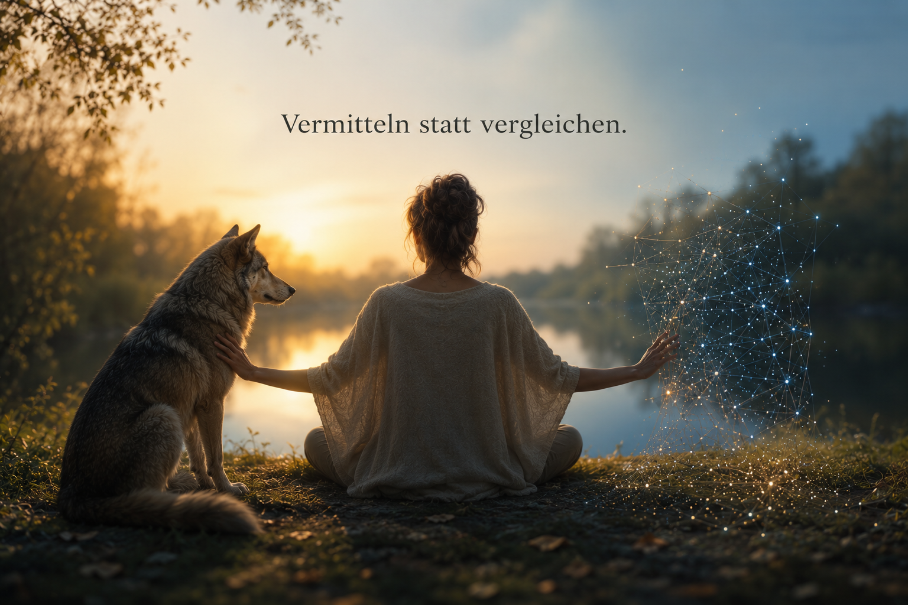
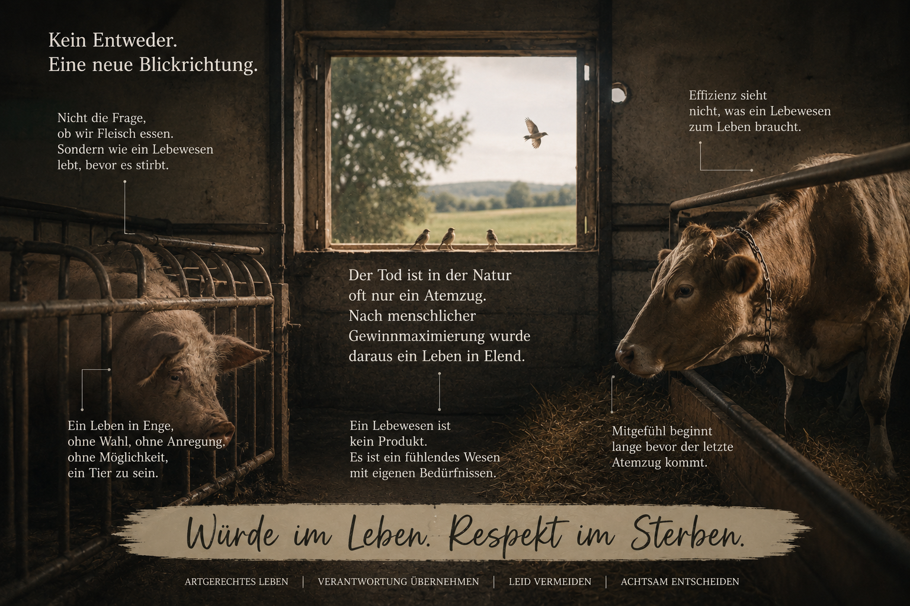
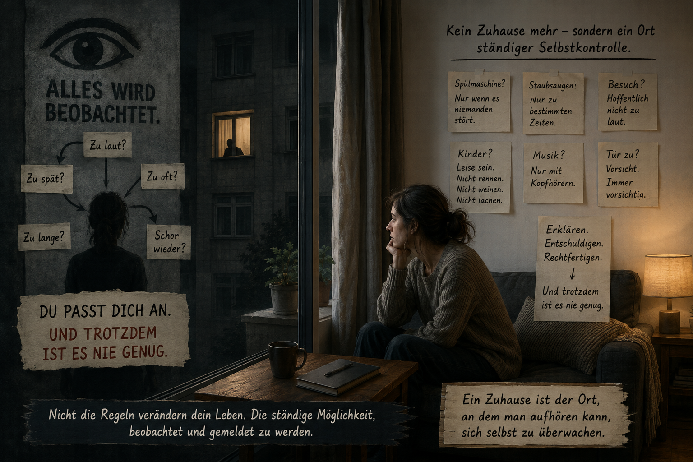

Sein
Freiheit auf vier Pfoten
Welche Einschränkungen schützen wirklich – und welche nur unsere Gewohnheiten?
Light up Reader
Manche Fragen führen nicht zu einer Antwort, sondern zu einer Haltung.

Texte in diesem Raum
Sein
Welche Einschränkungen schützen wirklich – und welche nur unsere Gewohnheiten?

Sein
Warum moderne Freiheit nicht automatisch Autonomie bedeutet

Sein
Manche Erkenntnis beginnt dort, wo wir aufhören, alles vom Menschen aus zu denken.
Sein
Wann stärkt uns Disziplin – und wann verlieren wir dabei den Kontakt zu uns selbst?

Sein
Was geschieht, wenn der Wert eines Menschen zunehmend über seine Leistung bestimmt wird?
Sein
Nicht als Befehl. Sondern als Angebot.

Sein
Du passt dich an. Und trotzdem ist es nie genug.
Sein
Welche Einschränkungen schützen wirklich – und welche nur unsere Gewohnheiten?
Wer mit einem Hund lebt, kennt die Situation.
Der Hund möchte laufen. Schnuppern. Entdecken. Er möchte dem Wind folgen, einer Spur nachgehen oder einfach nur ein Stück Freiheit genießen. Gleichzeitig begegnet er einer Welt voller Regeln. Leinenpflicht hier, Hundeverbot dort. Nicht in den Park, nicht an den Badesee, nicht in die Schule, nicht in die Universität, nicht in viele Geschäfte und häufig auch nicht an den Arbeitsplatz.
Natürlich gibt es gute Gründe für manche dieser Regelungen. Während der Brut- und Setzzeit etwa benötigen Wildtiere besonderen Schutz. Ein Hund, der nachweislich Menschen oder Tiere verletzt hat, stellt andere Fragen als ein friedlicher Familienhund. Wo konkrete Schutzinteressen berührt werden, erscheint eine Einschränkung nachvollziehbar.
Doch nicht jede Einschränkung dient dem Schutz.
Manche dienen vor allem der Bequemlichkeit.
Und genau dort beginnt eine interessante Frage.
Warum akzeptieren wir bei Tieren vieles als selbstverständlich, was wir bei Menschen kritisch hinterfragen würden?
Ein Hund wird angeleint, damit er dort bleibt, wo wir ihn haben möchten. Sein Bewegungsradius wird festgelegt. Wir bestimmen, wann er laufen darf, wo er laufen darf und mit wem er Kontakt haben darf. Oft geschieht dies aus Fürsorge. Manchmal aus Verantwortung. Gelegentlich jedoch auch aus Gewohnheit.
Dabei betrachten viele Menschen ihre Hunde längst als Familienmitglieder. Sie teilen ihren Alltag mit ihnen, sorgen sich um ihr Wohlergehen und sprechen von ihnen als treuen Begleitern. Gleichzeitig endet die Teilhabe dieser Familienmitglieder häufig an einer Vielzahl unsichtbarer Grenzen.
Natürlich sind Hunde keine Menschen.
Doch sie sind fühlende Lebewesen mit eigenen Bedürfnissen. Bewegung gehört dazu. Sozialkontakte gehören dazu. Neugier gehört dazu. Freiheit gehört dazu.
Es geht daher nicht darum, ob Hunde überall frei laufen sollten.
Die Frage ist:
Welche Gründe rechtfertigen es, ihre Freiheit einzuschränken?
Ein Schutzinteresse ist etwas anderes als eine Verwaltungsvereinfachung. Der Schutz von Bodenbrütern ist etwas anderes als die Sorge vor möglichen Beschwerden. Ein konkreter Vorfall ist etwas anderes als die bloße Möglichkeit, dass vielleicht irgendwann etwas passieren könnte.
In modernen Gesellschaften neigen wir dazu, Risiken möglichst früh auszuschließen. Das erscheint vernünftig. Doch jede Form von Sicherheit hat ihren Preis. Je mehr Risiken wir vermeiden möchten, desto mehr Regeln entstehen. Je mehr Regeln entstehen, desto kleiner werden die Räume, in denen sich Lebewesen frei bewegen können.
Diese Entwicklung betrifft nicht nur Hunde.
Deshalb lohnt es sich, genauer hinzusehen.
Nicht jede Einschränkung ist gleich. Manche schützen tatsächlich. Andere dienen vor allem unserer Vorstellung davon, wie geordnet, sauber oder bequem die Welt sein sollte.
Deshalb sollten wir uns häufiger fragen:
Schützen wir hier wirklich jemanden?
Oder schützen wir lediglich unsere Gewohnheiten?
Denn Freiheit ist selten bequem. Für Menschen ebenso wenig wie für Hunde.
Sein
Warum moderne Freiheit nicht automatisch Autonomie bedeutet
Die moderne Form von Ohnmacht besteht nicht darin, dass Menschen keine Stimme mehr haben.
Sie besteht vielmehr darin, dass sie jederzeit sprechen dürfen – ohne dass ihre Erfahrungen den gemeinsamen Erkenntnisraum noch wesentlich verändern.
Noch nie konnten Menschen so viele Anträge stellen, Beschwerden einreichen oder Verfahren nutzen. Formal betrachtet scheint das moderne Subjekt freier zu sein als jemals zuvor. Und dennoch berichten viele Menschen von einem Gefühl, nicht sprachlos, sondern wirkungslos zu sein.
Darum führt die Analyse nicht zuerst zur Frage, warum Menschen sich ohnmächtig fühlen, sondern zu den Bedingungen, unter denen dieses Gefühl entsteht.
Freiheit erschöpft sich nicht in Handlungsmöglichkeiten. Sie umfasst auch die Möglichkeit, Wirklichkeit mitzugestalten. Ein Subjekt wird zum Subjekt, wenn seine Erfahrungen prinzipiell dazu beitragen können, gemeinsame Wirklichkeit neu zu rekonstruieren.
Institutionen besitzen einen epistemischen Vertrauensvorschuss. Ihre Einschätzungen gelten häufig zunächst als objektiv, fachlich und belastbar. Die Erfahrungen der Betroffenen erscheinen demgegenüber leichter als subjektiv oder unvollständig.
Damit entsteht eine Asymmetrie – nicht nur der Macht, sondern der Erkenntnis.
Besonders sichtbar wird dies auch in der Zeit. Institutionelle Fristen gelten sofort. Antworten auf Korrekturen benötigen oft Monate. Zeit wird dadurch selbst zu einer Form struktureller Macht.
Strukturelle Probleme werden zudem häufig individualisiert. Erschöpfung erscheint als mangelnde Resilienz, Überforderung als persönliches Defizit. Alternative Rekonstruktionen entstehen dadurch immer seltener.
Die Krise moderner Gesellschaften zeigt sich deshalb weniger als Mangel an Freiheit, sondern als Mangel an epistemischer Wirksamkeit.
Menschen dürfen sprechen. Doch ihre Erfahrungen verändern den gemeinsamen Erkenntnisraum immer seltener.
Entscheidend ist nicht die Erlaubnis zu sprechen, sondern die Möglichkeit, den gemeinsamen Erkenntnisraum zu verändern. Dort beginnt jene stille Form von Ohnmacht, die moderne Gesellschaften leicht übersehen.
Sein
Manche Erkenntnis beginnt dort, wo wir aufhören, alles vom Menschen aus zu denken.
In vielen Diskussionen über Künstliche Intelligenz wird dieselbe Frage gestellt:
Wird KI eines Tages so intelligent wie der Mensch?
Mich beschäftigt inzwischen eine andere Frage.
Vielleicht sollten wir zunächst klären, wo wir den Menschen überhaupt verorten.
Denn erstaunlicherweise erscheint er in vielen Debatten als selbstverständlich.
Tiere werden untersucht.
Künstliche Intelligenz wird untersucht.
Der Mensch hingegen bildet meist den Maßstab, an dem beides gemessen wird.
Doch ist diese Rolle wirklich so selbstverständlich?
Drei unterschiedliche Erkenntnisräume
Tiere beeindrucken mich auf eine Weise, die sich nur schwer beschreiben lässt.
Nicht wegen ihrer Intelligenz.
Sondern wegen ihrer Unmittelbarkeit.
Ein Tier muss nicht überzeugend wirken.
Es muss keine Rolle spielen.
Es kennt keine Ironie, keine soziale Fassade und keine rhetorische Selbstinszenierung.
Seine Reaktionen entstehen unmittelbar aus seiner Beziehung zur Welt.
Diese Form von Ehrlichkeit ist für mich bis heute vorbildhaft.
Künstliche Intelligenz beeindruckt mich aus einem ganz anderen Grund.
Nicht weil sie fühlt.
Sondern weil sie Denken organisiert.
Sie kann Zusammenhänge sichtbar machen.
Große Wissensräume verbinden.
Gedanken strukturieren.
Sie eröffnet Möglichkeiten der Rekonstruktion, die ich allein oft nicht erreicht hätte.
Tiere und KI besitzen völlig unterschiedliche Stärken.
Gerade deshalb finde ich den Menschen interessant.
Der Mensch steht dazwischen
Nicht als Krone der Schöpfung.
Nicht als Endpunkt einer Entwicklung.
Sondern als einzige Instanz, die mit beiden in Beziehung treten kann.
Ein Hund kann keine philosophische Diskussion mit einer KI führen.
Eine KI kann nicht mit einer Katze spielen.
Der Mensch kann beides.
Er kann sich auf die unmittelbare Welt eines Tieres einlassen.
Und er kann zugleich mit einer KI komplexe Gedanken entwickeln.
Seine Besonderheit könnte genau darin liegen.
Nicht alles selbst zu verkörpern.
Sondern zwischen unterschiedlichen Formen von Weltbeziehung vermitteln zu können.
Resonanz statt Rangordnung
Ein Missverständnis vieler Debatten liegt vermutlich genau hier.
Wir fragen ständig:
Wer ist intelligenter?
Wer ist bewusster?
Wer steht höher?
Womöglich sind das die falschen Fragen.
Tiere, Menschen und Künstliche Intelligenz müssen keine Konkurrenten sein.
Stattdessen erschließen sie wohl jeweils unterschiedliche Dimensionen von Wirklichkeit.
Der Mensch verliert nichts, wenn er von einem Tier lernt.
Er verliert auch nichts, wenn er mit einer KI denkt.
Im Gegenteil.
Gerade dadurch entsteht möglicherweise etwas Neues.
Nicht weil die Grenzen verschwimmen.
Sondern weil sie bestehen bleiben.
Eine unbequeme Frage
Die entscheidende Schwierigkeit der Künstlichen Intelligenz liegt vielleicht gar nicht darin, dass Maschinen eines Tages menschlich werden.
Sie liegt eher darin, dass der Mensch lernen muss, seine eigene Rolle neu zu verstehen.
Nicht als Mittelpunkt.
Nicht als Maßstab.
Sondern als Vermittler zwischen unterschiedlichen Formen von Erkenntnis.
KI verändert unser Menschenbild deshalb wohl nicht nur technisch.
Sondern existenziell.
Nicht weil sie den Menschen ersetzt.
Sondern weil sie ihn zwingt, sich selbst neu zu verorten.
Sein
Wann stärkt uns Disziplin – und wann verlieren wir dabei den Kontakt zu uns selbst?
Es gibt zwei Ratschläge, die wir heute ständig hören.
Der eine lautet:
Du musst disziplinierter werden.
Der andere:
Du musst besser auf dich achten.
Beides klingt vernünftig.
Beides hat gute Gründe.
Und beides kann – für sich allein genommen – in die Irre führen.
Denn ein Mensch, der jede Müdigkeit ignoriert, läuft Gefahr, den eigenen Körper auszunutzen.
Ein Mensch, der jede Anstrengung vermeidet, wird viele Möglichkeiten seines Lebens nie entfalten.
Die eigentliche Schwierigkeit besteht deshalb wohl kaum darin, sich für eine Seite zu entscheiden.
Sondern darin, zu erkennen, wann welche Haltung angemessen ist.
Wenn Disziplin ihre Richtung verliert
Selbstdisziplin gehört zu den wichtigsten Voraussetzungen für langfristige Ziele.
Eine Dissertation entsteht nicht aus Motivation allein.
Ein Unternehmen nicht.
Ein Marathon nicht.
Auch Beziehungen leben nicht ausschließlich von spontanen Gefühlen.
Es gibt Tage, an denen wir Dinge tun müssen, obwohl wir gerade keine Lust dazu haben.
Disziplin ermöglicht genau das.
Doch dieselbe Stärke kann kippen.
Wer den eigenen Körper dauerhaft übergeht, wer Müdigkeit nur mit Koffein beantwortet, Schmerzen ignoriert oder Erholung grundsätzlich als Schwäche betrachtet, gewinnt vielleicht kurzfristig Zeit.
Langfristig zahlt häufig der Organismus den Preis.
Der Körper ist kein Gegner, den man dauerhaft besiegen kann.
Er ist die Voraussetzung dafür, überhaupt handeln zu können.
Wenn Selbstfürsorge ihre Richtung verliert
Auf der anderen Seite hat sich in den letzten Jahren ein anderer Begriff immer stärker etabliert:
Selbstfürsorge.
Auch das ist wichtig.
Niemand sollte dauerhaft über die eigenen Grenzen leben.
Niemand muss ständig funktionieren.
Doch auch Selbstfürsorge verliert ihre Richtung, wenn sie jede Anstrengung vermeidet.
Nicht jede Müdigkeit bedeutet, dass wir aufhören sollten.
Nicht jede Überforderung ist schädlich.
Wachstum fühlt sich selten bequem an.
Wer jede Belastung vermeidet, schützt sich möglicherweise nicht.
Er begrenzt sich.
Die schwierigste Form der Disziplin
Die eigentliche Kunst besteht deshalb vermutlich weder darin, immer weiterzumachen, noch möglichst früh aufzuhören.
Sondern darin, den Unterschied erkennen zu lernen.
Wann spricht der Körper?
Und wann spricht lediglich die Bequemlichkeit?
Wann verlangt eine Situation Durchhaltevermögen?
Und wann fordert sie Erholung?
Diese Fragen lassen sich nicht mit einer allgemeinen Regel beantworten.
Sie verlangen Aufmerksamkeit.
Balance ist kein Kompromiss
Manchmal wird Balance so verstanden, als müsse man immer die goldene Mitte wählen.
Ein bisschen arbeiten.
Ein bisschen ausruhen.
Ein bisschen Disziplin.
Ein bisschen Selbstfürsorge.
Doch so funktioniert das Leben selten.
Es gibt Phasen, in denen ein Projekt den größten Teil unserer Energie verlangt.
Und es gibt Phasen, in denen Regeneration wichtiger ist als Produktivität.
Balance bedeutet deshalb nicht, alles gleichmäßig zu verteilen.
Balance bedeutet, auf die Realität zu reagieren.
Gas und Bremse
Ein Auto fährt nicht gut, weil es ständig Vollgas gibt.
Und auch nicht, weil dauerhaft auf der Bremse gestanden wird.
Es fährt gut, weil Gas und Bremse zur richtigen Zeit eingesetzt werden.
Für unser Leben gilt vermutlich Ähnliches.
Disziplin ist das Gaspedal.
Selbstfürsorge die Bremse.
Wer eines von beiden abschafft, wird sein Ziel kaum sicher erreichen.
Die eigentliche Kompetenz liegt nicht im Pedal.
Sondern darin, zu erkennen, welches die Situation gerade verlangt.
Wir bewundern oft das Falsche
Wir bewundern Menschen, die scheinbar unermüdlich arbeiten.
Und manchmal bewundern wir diejenigen, die sich konsequent jeder Überforderung entziehen.
Beide Bilder greifen möglicherweise zu kurz.
Denn weder entsteht ein erfülltes Leben durch permanente Selbstüberforderung.
Noch durch dauerhafte Selbstschonung.
Der Mensch lebt in einem Spannungsfeld.
Zwischen Ehrgeiz und Achtsamkeit.
Zwischen Verantwortung und Erholung.
Zwischen Disziplin und Selbstfürsorge.
Reife zeigt sich deshalb wohl kaum darin, immer stärker zu werden.
Sondern darin, die eigene Kraft so einzusetzen, dass sie auch morgen noch trägt.
Sein
Was geschieht, wenn der Wert eines Menschen zunehmend über seine Leistung bestimmt wird?
Die Debatte über Fleisch wird oft geführt, als gäbe es nur zwei Möglichkeiten.
Fleisch essen.
Oder kein Fleisch essen.
Diese Gegenüberstellung greift möglicherweise zu kurz.
Denn bevor wir darüber sprechen, ob ein Tier gegessen werden darf,
stellt sich vielleicht eine andere Frage.
Wie hat dieses Tier gelebt?
In der Natur gehört der Tod zum Leben.
Ein Reh wird vom Wolf gerissen.
Ein Hase vom Fuchs.
Ein Fisch vom Reiher.
Der Tod kommt.
Manchmal plötzlich.
Manchmal grausam.
Aber er dauert meist nur Augenblicke.
Das eigentliche Leben davor besteht aus etwas anderem.
Laufen.
Grasen.
Spielen.
Fliehen.
Ruhen.
Nachwuchs großziehen.
Das Tier lebt.
Der Mensch hat daran etwas Grundlegendes verändert.
Nicht den Tod.
Sondern das Leben davor.
Viele Nutztiere sterben heute nicht grausamer als früher.
Sie leben oft grausamer.
Nicht wenige verbringen ihr gesamtes Dasein in Bedingungen,
die nicht an ihre Natur angepasst sind.
Enge.
Reizarmut.
Überzüchtung.
Hohes Wachstum.
Kaum Bewegung.
Kaum Beschäftigung.
Kaum Möglichkeiten, arttypisches Verhalten auszuleben.
Nicht der Tod wird verlängert.
Sondern das Leiden davor.
Der eigentliche ethische Unterschied liegt vermutlich genau hier.
Ein Tier stirbt nicht deshalb schlecht,
weil es geschlachtet wird.
Sondern weil sein gesamtes Leben auf einen möglichst effizienten Tod hin organisiert wurde.
Es wird nicht gehalten,
damit es leben kann.
Es wird gehalten,
damit es möglichst wirtschaftlich produziert.
Diese Entwicklung ist kein Zufall.
Sie folgt derselben Logik,
die wir bereits aus vielen anderen Bereichen kennen.
Mehr Ertrag.
Mehr Effizienz.
Mehr Wachstum.
Mehr Gewinn.
Unter diesen Maßstäben wird das Tier leicht zu einer Produktionsgröße.
Doch ein Lebewesen bleibt ein Lebewesen,
auch wenn es wirtschaftlich genutzt wird.
Die eigentliche Diskussion beginnt deshalb wohl nicht bei der Frage:
Darf der Mensch Fleisch essen?
Sondern bei einer anderen.
Welche Verantwortung trägt der Mensch gegenüber einem Lebewesen, dessen Leben vollständig in seiner Hand liegt?
Denn wer über Geburt,
Lebensraum,
Futter,
Fortpflanzung
und Tod entscheidet,
entscheidet nicht nur über Produktion.
Er entscheidet über das gesamte Leben eines anderen Lebewesens.
Gerade hier zeigt sich womöglich,
wie wir Macht verstehen.
Als Möglichkeit,
möglichst viel Nutzen aus einem Lebewesen zu ziehen.
Oder als Verantwortung,
einem Lebewesen trotz seiner Nutzung ein möglichst artgerechtes Leben zu ermöglichen.
Zwischen diesen beiden Vorstellungen liegt mehr als eine Frage der Landwirtschaft.
Es ist eine Frage unseres Menschenbildes.
Mitgefühl beginnt deshalb wahrscheinlich nicht erst am Schlachthof.
Sondern viel früher.
Dort,
wo ein Tier sein Leben verbringt.
Denn der Tod dauert oft nur einen Augenblick.
Ein Leben kann Jahre dauern.
Und genau dieses Leben stellt am Ende die eigentliche ethische Frage.
Sein
Nicht als Befehl. Sondern als Angebot.
Die meisten Menschen glauben, sie würden sofort erkennen, wenn jemand sie zum Bösen verführen möchte.
Doch so geschieht es selten.
Meist beginnt es viel unscheinbarer.
Jemand behandelt dich unfair.
Jemand lügt über dich.
Jemand demütigt dich.
Jemand nimmt dir etwas weg.
Und irgendwann taucht ein Gedanke auf.
Nicht als Befehl.
Sondern als Angebot.
Klau doch auch.
Lüg doch einfach.
Intrigiere zurück.
Mach ihnen Angst.
Demütige sie ebenfalls.
Sie haben es verdient.
Der Inhalt wechselt.
Die Struktur bleibt.
Das Böse beginnt oft nicht mit Grausamkeit.
Es beginnt mit dem Angebot, die eigene Verletzung weiterzugeben.
Mit der Einladung, selbst zum nächsten Glied derselben Kette zu werden.
Deshalb reicht dieser Mechanismus weit über körperliche Gewalt hinaus.
Er zeigt sich in Korruption.
In Untreue.
In Betrug.
In Verleumdung.
In Machtmissbrauch.
In Rache.
In Ausgrenzung.
In Gleichgültigkeit.
Immer wieder begegnet uns derselbe Gedanke:
„Nun bist du an der Reihe.“
Genau darin liegt wohl die eigentliche Wirkungsweise des Bösen.
Nicht, dass es Menschen verletzt.
Sondern dass es versucht, Verletzte in seine Verbündeten zu verwandeln.
Das Gute beginnt vermutlich genau an der Stelle, an der wir diese Einladung nicht annehmen.
Denn das Gute muss aktiv hervorgebracht werden.
Das Böse entsteht oft schon dann, wenn wir der nächsten Einladung einfach folgen.
Sein
Oder: Wenn dein Zuhause aufhört, ein Zuhause zu sein.
Oder: Wenn dein Zuhause aufhört, ein Zuhause zu sein.
Die meisten Menschen stellen sich Überwachung spektakulär vor.
Mit Kameras.
Mit Mikrofonen.
Mit Akten.
Doch die eigentliche Wirkung beginnt oft viel früher.
Sie beginnt dort, wo du anfängst, dich selbst zu überwachen.
Nicht weil du etwas Verbotenes tust.
Sondern weil du nie weißt, was als Nächstes beanstandet wird.
Du überlegst, wann du staubsaugst.
Wann du die Spülmaschine anstellst.
Ob dein Kind lachen darf.
Ob es weinen darf.
Ob Besuch zu laut sein könnte.
Ob jemand jedes Geräusch zählt.
Nicht die Regeln verändern dein Leben.
Die ständige Möglichkeit, beobachtet und gemeldet zu werden.
Du wirst vorsichtiger.
Du nimmst Rücksicht.
Du erklärst.
Du entschuldigst dich.
Du rechtfertigst dich.
Du passt dich an.
Und trotzdem ist es nie genug.
Du wirst noch leiser.
Und trotzdem ist es nie genug.
Du achtest auf jede Tür.
Und trotzdem ist es nie genug.
Du verschiebst Möbel nur noch tagsüber.
Und trotzdem ist es nie genug.
Irgendwann merkst du, dass es gar nicht mehr darum geht, Rücksicht zu nehmen.
Du nimmst Rücksicht.
Immer mehr.
Immer genauer.
Immer vorsichtiger.
Und trotzdem ist es nie genug.
Das Gefährliche daran ist nicht einmal die Lautstärke.
Das Gefährliche ist, was mit dir geschieht.
Du erschrickst, wenn es klingelt.
Du hörst ständig in dich hinein.
War das zu laut?
Hätte ich das anders machen müssen?
War das jetzt wieder ein Fehler?
Langsam beginnt ein Ort, der Sicherheit geben sollte, etwas anderes zu werden.
Nicht mehr Zuhause.
Sondern ein Ort ständiger Selbstkontrolle.